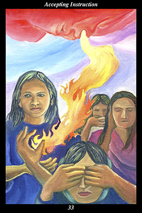

 | IMAGEFire descends from the sky of the creators, entering the only receptive heart it finds among a group of female warriors. |
INTERPRETATION
This hexagram depicts truth and its power to overcome the fear of rejection and aloneness. The fire descending from the sky of the creators symbolizes the transmission of divine intelligence passing from the sky-realm of the ancestors into the earth-realm of the living. The three warriors oblivious to the divine fire represent social conventions and their power to maintain the status quo. The single female warrior who opens her heart to the divine fire represents the individual who places greater trust in the teachings of spirit than in the accepted wisdom of the time. Taken together, these symbols mean that you do not hesitate to walk the road of freedom alone.
ACTION
The feminine half of the spirit warrior gains understanding of a truth that can neither be seen, heard, nor spoken. While much useful knowledge can be learned from others, the core lesson of life can only be experienced first-hand through our relationship with the divine. Until this central lesson of life is learned, all other knowledge revolves around the central concept of our physical and social identity. Just as we invent simple explanations to make adult reasoning understandable to children, the concept of a physical and social self is a temporary explanation to make the spirit warrior’s reasoning understandable to us until we experience the divine. Because you are leaving intermediaries behind in your spirit journey, it is a time for ridding yourself of misunderstandings and misconceptions learned in an earlier phase of life. The greater part of learning is relearning: because many of the ideas you harbor are the result of earlier naiveté and inexperience, they must be replaced with ideas that more accurately portray the world as it truly is. Making your heart open by allowing yourself to be loved, receiving divine intelligence by accepting instruction from your spiritual ancestors, you become a torch that helps dispel the shadows of doubt and fear clouding the hearts of others.
INTENT
When you have experienced a lesson that cannot be communicated to others, hold it in your heart, protect it and nourish it, concerning yourself only with the question of how and under what circumstances to put it into action. By holding it in your heart you do not waste energy trying to explain the inexplicable nor run the risk of calling undue attention to yourself. By protecting it you concentrate on your knowledge in order to keep the flame of understanding alive. By nourishing it you continue to learn its deeper meanings in order to help the flame of understanding grow. By concerning yourself only with putting it into practice in the right way at the right time, you bring
benefit to others while honoring the spiritual path they have chosen. For the spirit warrior, all other knowledge revolves around the core lesson of experiencing the divine.
SUMMARY
Only the wise are truly humble, only the humble are truly open-hearted. Make every action ring with humility and sincerity. Focus on the immediacy of your senses—what you are seeing, hearing, smelling, tasting, and touching in the moment—and not on what you are thinking, feeling, and remembering. Let go of the self-importance of the inside, let spirit enter your heart from the outside. Pay close attention to the details of your surroundings.
THE LINE CHANGES
1° In the course of trying to salvage something slipping away, you unexpectedly meet a superior who treats you like an equal. Follow the advice you are given and your inner riches will exceed your outer riches. It’s a uniquely positive partnership—sustain it through your coming transformations.
2° You stand before your overflowing treasure house and think yourself poor because the jewel you loved most was flawed. But possession is not love and a person cannot be won or lost—return to what is present, not absent, in your life. Your kindness and sincerity will lead you to happiness.
3° When the impasse is on the inside, no direction outside leads anywhere—all undertakings come to a halt and darkness obscures hope. Nothing changes until you change your habits of thought and emotion. Do not stay here grieving what does not exist—follow those who know this terrain.
4° You do not know why this one comes to you and that one does not—but you must serve each that approaches as an equal. Unseen forces pull you together so that you might help release the other’s untapped potential. The
benefit you dispense now comes back to you an hundredfold later.
5° You can extend your good fortune by viewing your accomplishments as the foundation of a higher and more noble endeavor. Fit the most far-sighted and capable people together like pieces of a puzzle, the whole of which exceeds the sum of its individuals. Aspire to meaningful beauty.
6° Once a wave crests, it is inevitable that it falls—once creative momentum is expended, it is time to stop. But this does not mean withdrawing into yourself. Be accessible and return to where you started by nurturing others’ potential.